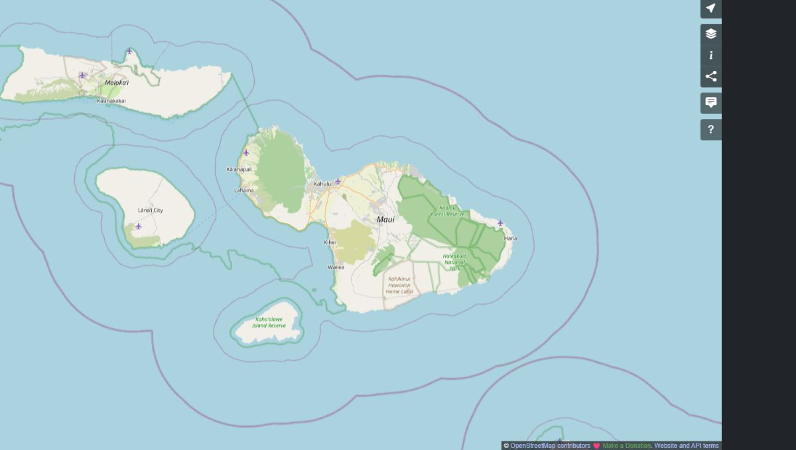

Life & personal growth
Discover your strengths, clarify your values, and take meaningful steps toward a life that feels authentic and fulfilling.
Explore life coachingTransformational life, business & personal development coaching to help you find your purpose, embrace change, and live a more fulfilling life.
Discover your strengths, clarify your values, and take meaningful steps toward a life that feels authentic and fulfilling.
Explore life coachingConnect your professional ambitions with your purpose. Build self-awareness, confidence, and a clear direction for your next chapter.
Explore business coachingFind compassionate, personalized support for recovery, relapse prevention, and rebuilding a meaningful life beyond addiction.
Explore recovery coaching
Explore your strengths and values. Make room for the life you want to lead.

Build confidence, set meaningful goals, and bring your work into alignment.

Strengthen your connections and create healthier patterns in everyday life.

Move forward with compassionate support and a plan shaped around you.
Affectionately known as “Goldilocks,” Mary helps you find what is just right for your unique path. Her work brings together deep psychological insight, compassionate conversations, and practical steps toward lasting growth.
For those seeking not just change, but profound transformation.
Mary McNuttM.A. · Transformational Life & Business CoachMary’s approach begins with getting to know you. Through one-on-one conversations, personal reflection, and practical action, you can uncover your strengths and create a path toward meaningful change.

Mary McNutt, M.A. · Your coach
Bring your questions, your hopes, and your next chapter. Mary combines a strong educational foundation with decades of experience supporting individuals, professionals, and families.
Coaching, counseling, and personal transformation.
Advanced study in psychology and addiction studies.
A coaching relationship built around your needs.
Purpose, career, relationships, and recovery.
Reflections on growth, recovery, and finding your way forward.

Growth, healing, and the courage to create a life that feels authentic and fulfilling.
Mary McNutt Read article
Mary reflects on intervention, compassionate support, and the value of getting help.
Mary McNutt Read article
From Mary’s “Messages in a Bottle” series: a closer look at the stages of addiction.
Mary McNutt Read article
Structure, accountability, and compassionate guidance. Explore Mary’s programs at Center for Excellence and find the support that fits your journey.
Clarify your goals and build momentum with a personal action plan and four one-on-one sessions.
View programA guided coaching experience for clients committed to deeper, whole-life growth and fulfillment.
View programFlexible coaching options with personalized strategies, regular sessions, and accountability.
Compare optionsSix months of focused, personal support with priority scheduling and an immersive approach.
Explore VIPDevelop self-awareness, discover your strengths, and reconnect with what matters. Mary’s coaching helps you take deliberate steps toward your highest potential.
Explore personal growth


Connect your natural abilities with a meaningful career. Build clarity, strengthen your confidence, and turn your personal insight into thoughtful action.
Explore business coachingYou don’t have to find your way forward alone. Start with a free, confidential conversation about you, your goals, and what comes next.
Book a consultation
© OpenStreetMap contributorsContact Mary to confirm a time for your session.
Request a free consultation